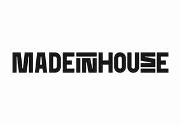

Trade Mark Journal No.2025/044 31 October 2025
UK00004278739 15 October 2025 (35,42)

- Class 35
- Design of advertising logos; Development of marketing concepts; Development of advertising concepts; Design of marketing surveys; Creative marketing plan development services; Design of advertising materials.
- Class 42
- Website design and development; Design and graphic arts design for the creation of web sites; Product design and development; Web site design consultancy; Design and development of multimedia products; Web site design and creation services; Design and development of homepages and websites; Design and development of databases; Design and graphic arts design for the creation of web pages on the Internet; Database design and development; Design, creation and programming of web pages; Web site design; Web site design services; Website design consultancy; Design, development and implementation of software; Consultancy relating to software design and development; Development and design of mobile applications; Website design; Design of web sites; Web portal design; Design and development of Internet security programs; Design and development of engineering products; Consultancy relating to the creation and design of websites for e-commerce; Logo design services; Web page design services; Design and development of new products; Design and development of industrial products; Brand design services; Design and development of consumer products; Design and development of energy management software; Website design services; Webpage design services; Design and development of software for database management; Design and development of route planning software; Design of websites; Consultancy relating to the creation and design of websites; Consultancy in the design and development of computer hardware; Computer hardware (Consultancy in the design and development of -); Design and testing for new product development; Consultancy relating to the design and development of computer programs; Design and development of software for inventory management; Internet web site design services; Design of web pages; Design and development of software for instant messaging; Graphic design services; Design and development of antivirus software; Development, design and updating of home pages; Design and development of driver software; Design consultancy; Computer software design and development; Design and development of computer software; Design and creation of web sites for others; Product design; Design and development of image processing software; Design and development of software in the field of mobile applications; Design and development of navigation systems; Consultancy relating to the design and development of computer software programs; Design and development of computer software for logistics; Design of software; Software design; Product design services; Design and development of computer databases; Design services; Design and development of telecommunications networks; Design and development of video game software; Consultancy relating to the design and development of computer database programs; Design and construction of homepages and websites; Design, development and programming of computer software; Consultancy relating to the design of packaging; Design and creation of homepages and web pages; Design and development of electronic database software; Design services (Packaging -); Design services for packaging; Packaging design services; Design and development of virtual reality software; Consultancy with regard to webpage design; Website development services; Design of logos for corporate identity; Graphic design; Computer system design and development; Analysis of product design; Design and development of single sign-on software; Design and maintenance of web sites for others; Design and development of computer game software; Design and development of computer software for others; Design and creating web sites for others; Design of graphics and of livery for corporate identity; Design and development of computer database programs; Computer site design; Planning, design, development and maintenance of online websites for third parties; Commercial design services; Computer website design; Illustration services (design); Design and development of computer database software; Design and development of software for electronic television program guides; Design and development of computer software for process control; Industrial packaging design services; Illustrating services (design); Development and design of digital sound and image carriers; Design and development of data processing software; Design and development of computer software for supply chain management; Graphic illustration design services; Packaging design; Design of packaging; Design services relating to the creation of networks; Design planning; Design of products.
Dominic Miles D'Arcy